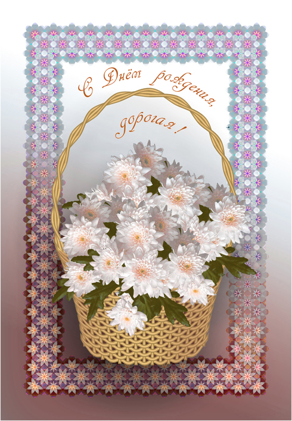
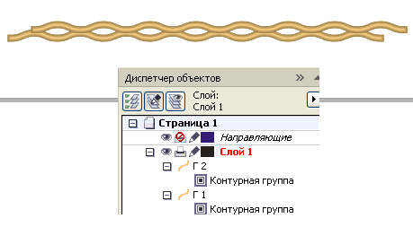
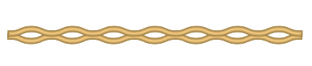
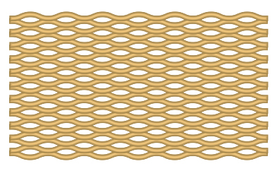
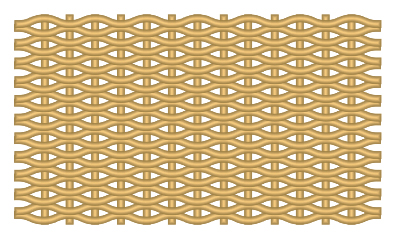
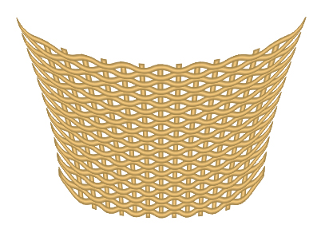
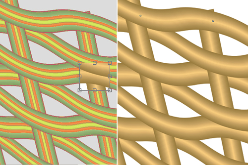
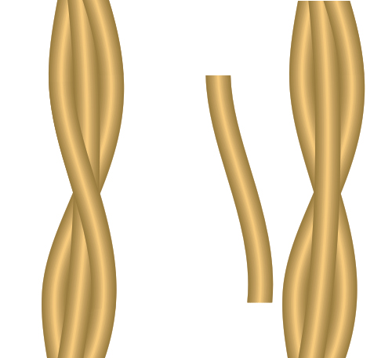

КОРЗИНКА
Почему цветы иногда дарят в корзине? Наверно так удобно, когда хотят подарить много цветов. А может быть наполненная корзина ассоциируется с таким символом благополучия, как полная чаша. Мастерски сплетённая корзина превращается из вещи утилитарной в художественно-ремесленное изделие, может стать украшением интерьера. Детальная прорисовка корзины дело такое же хлопотное, как и её плетение. Поэтому торопливые и нетерпеливые могут со спокойной душой этот урок прогулять.

Создайте горизонтальную волнообразную кривую толщиной 0,3 мм и от неё внешнюю контурную группу с шагом 0,2 мм, количество шагов 8–10. Таким образом получим горизонтальный пруток.
Создайте дубль горизонтального прутка, сместите его в сторону на расстояние, равное половине длины волны и сместите вверх так, чтобы оба прутка перекрывались на половину толщины прутка.

Удалите на концах линий, от которых создавали контурную группу, точки так, чтобы торцы двух прутков оказались рядом.

Сгруппируйте оба прутка и продублируйте группу со смещением несколько раз, чтобы получить стенку высотой, примерно равной высоте будущей корзинки.

Добавьте прямолинейные вертикальные прутки, созданные по подобию горизонтальных. Расположите их за горизонтальными.

Всё сгруппируйте и с помощью эффекта Оболочка придайте нужную форму стенке корзины.

Теперь предстоит самая трудоёмкая работа: создание правильного переплетения прутков. Здесь ситуация аналогична той, с которой мы уже сталкивались в уроке «Цепи и цепочки». Здесь также видимость правильного перекрытия элементов создаётся с помощью заплаток. Для каждого места перекрытия создаётся своя заплатка. Для создания заплатки дублируйте вертикальный пруток и из него с помощью инструмента Обрезка вырезайте заплатку, затем перемещайте её в структуре слоёв (в диспетчере объектов) выше того элемента, который требуется перекрыть. На рисунке ниже слева: вырезается заплатка из правого вертикального прутка. Для левого вертикального прутка перекрытия уже выполнены. На рисунке справа показан вид перекрытия прутков, где была вырезана заплатка,после перемещения заплатки на нужный уровень.

Добавьте дугообразный пруток – основу ручки.
Обвейте его минимум двумя линиями-змейками и скопируйте на них эффект Контур с прутка – основы ручки. Для не очень опытных пользователей уточню, что здесь копирование эффекта делается не так, как в других программах (копируется эффект, а затем вставляется в другой объект). Здесь наоборот: выделяется объект, к которому Вы хотите применить эффект, затем на главной панели выбираете Эффекты → Скопировать эффект → выбираете конкретный эффект из раскрывшегося подменю ( из активных кнопок) и затем курсором, который изменит вид на жирную стрелку, щёлкаете по тому объекту с эффектом, с которого хотите скопировать эффект (причём попасть надо не в сам исходный объект, а те производные, которые были образованы в результате применения этого эффекта). Расположите оба обвивающих прутка за прутком – основой ручки.
Затем поправляя инструментом Форма точки линий-змеек, добейтесь видимости плотной обвивки (без зазоров).
Также для создания видимости правильного перекрытия элементов используйте способ наложения заплатки. Дублируйте обвивающий пруток. Из него вырезаете заплатку и перемещаете её в структуре слоёв на нужный уровень. На рисунке ниже показано: слева – ручка с правильным перекрытием обвивающих прутков; справа – заплатка сдвинута в сторону, и видно, что обвивающие прутки расположены сзади прутка-основы.

В данном уроке рассматривается не создание изображения полностью от первого штриха до последнего, а те приёмы, при помощи которых изображение создаётся. Поэтому здесь не рассматривается этап создания задней стенки (видимой части внутренней полости).
Создание теней смотрите в специально посвящённом этому уроке «Тень с помощью контейнера».
Специально для CDRPRO.RU
Копирование урока или части его и публикация любым способом без письменного согласия автора запрещено.
Заплатки лучше накладывать ДО применения эффекта "Оболочка". Тогда их проще и быстрее расставить используя Трансформация/Позиция (Transformation/Position).
Ни в коем случае!
Сначала все трансформации. Затем вырезание заплаток.
Заплатки вообще не надо никуда смещать. Только в структуре слоёв.
После применения эффекта Оболочка к элементам с заплатками их края "съедут". Они станут не просто заметными, а будут безобразно выпирать.
Куда Вы собираетесь их расставлять? Каждая заплатка должна быть на том месте, где она вырезана.
stasys, Вы хотя бы пробуйте то, что советуете.